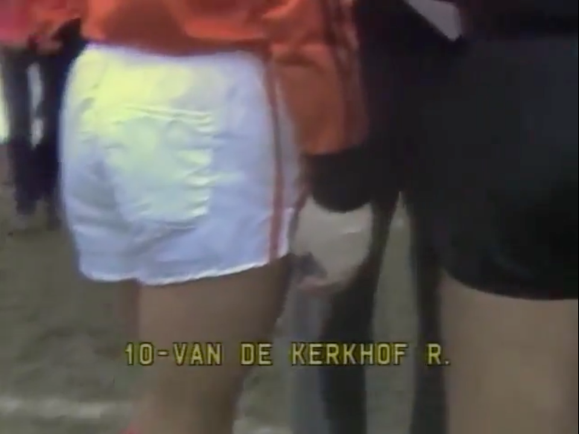

Mundial de la FIFA Argentina 1978
Fue la primera vez que la Selección se consagró como campeona del mundo. La dictadura y la Copa del Mundo. Las quejas de Daniel Passarella y César Luis Menotti por el yeso de Van de Kerkhof. La palabra de Daniel Bertoni para Página|12.
A 44 años de la final del Mundial 1978, en la que Argentina se impuso por 3 a 1 a Países Bajos y se consagró campeona del mundo por primera vez, aún quedan historias prácticamente desconocidas. Una tensa y caliente discusión provocó que la selección neerlandesa amagara a retirarse del campo de juego. "No final", gritaban los futbolistas.
La dictadura cívico-militar-eclesiástica utilizó el Mundial 1978 para hacer un lavado de su imagen, tanto a nivel local como internacional, en medio de las voces que ya comenzaban a denunciar el horror que se vivía. El Ente Autártico Mundial 1978 (EAM '78) fue una entidad creada en julio de 1976 para realizar las obras para el torneo. Tras el asesinato de Omar Actis, el presidente de la entidad fue Antonio Luis Merlo. Pero el verdadero poder y el manejo de la caja los tenía el almirante Carlos Lacoste, mano derecha de Emilio Massera y amigo íntimo de João Havelange, presidente de la FIFA por aquel entonces y defensor del régimen.
El EAM '78 tenía fondos ilimitados. Juan Alemann, secretario de Hacienda del ministro José Alfredo Martínez de Hoz en ese momento, estimó, años más tarde, que se gastaron unos 700 millones de dólares en la organización, entre siete y ocho veces más que lo que se había presupuestado. El funcionario en cuestión fue víctima de un atentado por haberse quejado de los costos: le pusieron una bomba en el frente de su casa. “Massera ordenó que me maten porque me había metido con los gastos del Mundial”, declaró en 2005.
A 44 años de la final del Mundial 1978, en la que Argentina se impuso por 3 a 1 a Países Bajos y se consagró campeona del mundo por primera vez, aún quedan historias prácticamente desconocidas. Una tensa y caliente discusión provocó que la selección neerlandesa amagara a retirarse del campo de juego. "No final", gritaban los futbolistas. Documentos desclasificados del Mundial '78 El jugador neerlandés que visitó a las Madres: "Fue muy conmocionante" El Mundial 1978 y la dictadura La dictadura cívico-militar-eclesiástica utilizó el Mundial 1978 para hacer un lavado de su imagen, tanto a nivel local como internacional, en medio de las voces que ya comenzaban a denunciar el horror que se vivía. El Ente Autártico Mundial 1978 (EAM '78) fue una entidad creada en julio de 1976 para realizar las obras para el torneo. Tras el asesinato de Omar Actis, el presidente de la entidad fue Antonio Luis Merlo. Pero el verdadero poder y el manejo de la caja los tenía el almirante Carlos Lacoste, mano derecha de Emilio Massera y amigo íntimo de João Havelange, presidente de la FIFA por aquel entonces y defensor del régimen.
El EAM '78 tenía fondos ilimitados. Juan Alemann, secretario de Hacienda del ministro José Alfredo Martínez de Hoz en ese momento, estimó, años más tarde, que se gastaron unos 700 millones de dólares en la organización, entre siete y ocho veces más que lo que se había presupuestado. El funcionario en cuestión fue víctima de un atentado por haberse quejado de los costos: le pusieron una bomba en el frente de su casa. “Massera ordenó que me maten porque me había metido con los gastos del Mundial”, declaró en 2005. De esta manera, el torneo fue utilizado por la Junta Militar para tapar los secuestros, las torturas y los asesinatos. Ante las críticas recibidas, los militares denunciaban una "Campaña anti-Argentina", una posición que explica muy bien el informe de la Comisión Provincial por la Memoria. Mientras se realizaba la inauguración del campeonato, las Madres de Plaza de Mayo hacían las rondas con los pañuelos blancos, reclamando por sus hijos desaparecidos. A pocos minutos del estadio Monumental funcionaba la ESMA, el mayor centro de detención clandestino de una dictadura que dejó más de 30 mil desaparecidos y destruyó al país en muchos otros aspectos. Unas pocas cuadras separaban la felicidad y la alegría de la tortura y el asesinato. El yeso de Van der Kerkhof En el imaginario popular, el nombre Carlos Salvador Bilardo, director técnico del seleccionado argentino de fútbol campeón del mundo en México 1986, está muy emparentado a la viveza, la chispa, la picardía. Pero las "bilardeadas", como se conoce a esas actitudes en las que se busca sacarle ventajas al rival, se pueden encontrar en equipos como el de César Luis Menotti, un entrenador que en muchas cuestiones se encuentra en las antípodas del Narigón. Luego del saludo inicial, Osvaldo Ardiles se acercó y le comentó a Daniel Passarella, capitán de la Selección, que René van de Kerkhof, número 10 y figura de Países Bajos, tenía un yeso muy duro en su muñeca derecha. El exTottenham se dio cuenta de que eso representaba un peligro para los futbolistas de la Selección, aunque ese no fue el único motivo por el cual reclamaron. Inmediatamente Pasarrella fue corriendo para recriminarle al árbitro Sergio Gonella que jugar con ese yeso era "antirreglamentario". Por su parte, Menotti le advirtió que se tendría que hacer cargo si alguno de sus jugadores recibía un golpe. Tras unos minutos de discusión, Ruud Krol, capitán neerlandés, amenazó con retirar a su selección de la cancha ante la negativa del árbitro de permitir que van de Kerkhof juegue con ese yeso. De hecho, varios jugadores efectivamente salieron del terreno de juego. René sufrió una falta en el área en el primer partido, ante Irán, y se rompió un hueso de la muñeca derecha. El PSV, equipo donde jugaba, pidió formalmente al jugador que regresara al país, pero Fritz Kessel, médico de la selección neerlandesa, respondió que podía seguir jugando con ese vendaje. Es más, el futbolista jugó todo el Mundial con ese yeso y nadie le había reclamado nada. Eso intentaban explicarle los europeos a Gonella, quien no entendía inglés y solo hablaba italiano. "Estoy seguro que todo estaba preparado de antemano. El árbitro entró en la trampa de Passarella", aseguró Krol en declaraciones posteriores. Américo el Tolo Gallego, volante central del combinado nacional, reconoció en 1997, para el diario colombiano El Tiempo, que "fue una picardía y que ellos estuvieron parados 15 minutos y nosotros seguíamos calentando". Lo curioso es que Mario Alberto Kempes, autor de dos goles en esa final, escribió en su libro "Matador: mi autobiografía" que "el árbitro ordenó que abrieran el vendaje y todos vieron que René no tenía nada. Recién ahí lo cerraron de nuevo y se jugó". La nueva venda de Van de Kerkhof, de un color más transparente que el yeso. “Sabíamos que eso los iba sacar del partido y que los iba poner nerviosos. Ardiles se da cuenta de que es un yeso, no podés jugar con un yeso, te pega y te lastima. Pasarella empezó a hablar con el árbitro y hasta que no le hicieron un vendaje distinto no paramos", declaró Daniel Bertoni, titular y autor del tercer gol de la final, en diálogo con Página|12. Esta picardía se sumaba a una lista de hechos que ya habían generado mucha incomodidad en el rival. El primero fue el cambio del árbitro. El designado en un principio era el israelí Abraham Klein. La AFA se quejó al considerar que ese referi había perjudicado a la Selección en la caída 1 a 0 ante Italia en la fase inicial. La FIFA accedió al pedido y puso en su lugar al italiano Sergio Gonella.